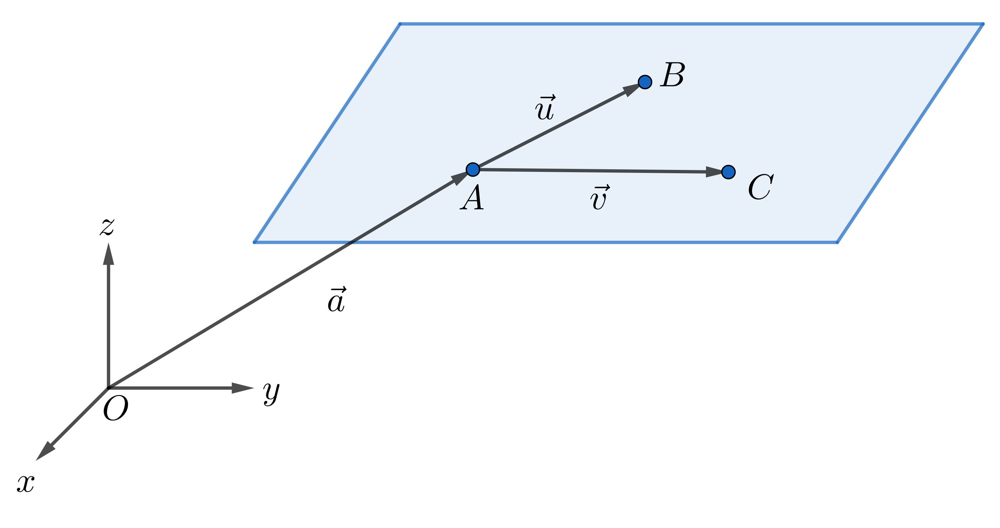
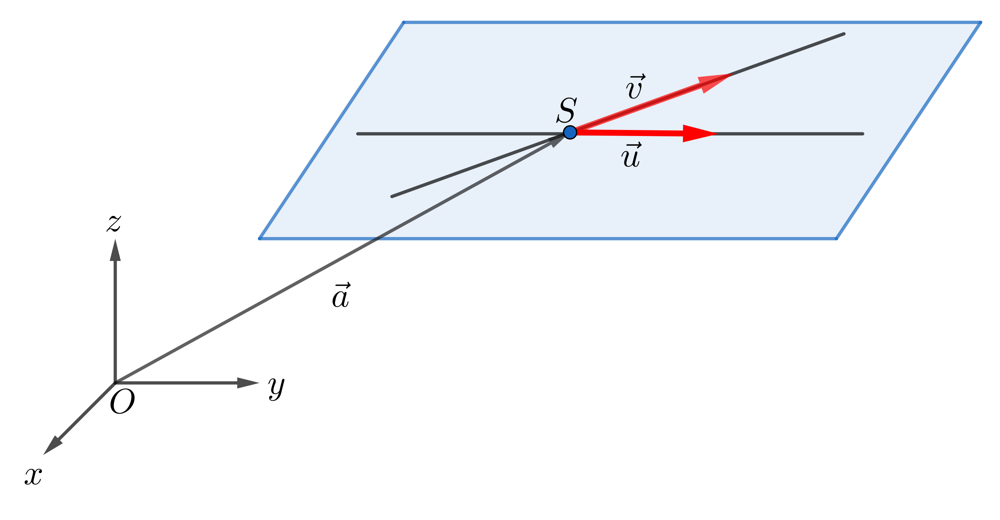
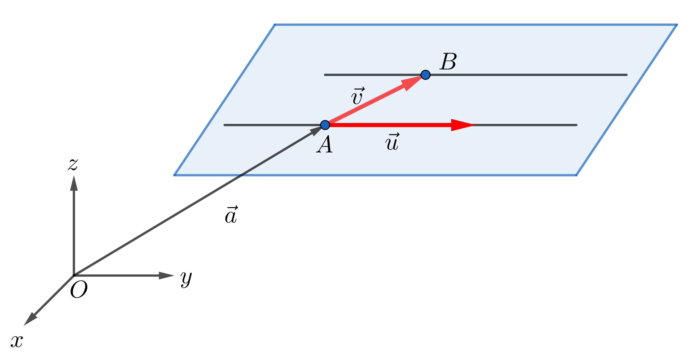
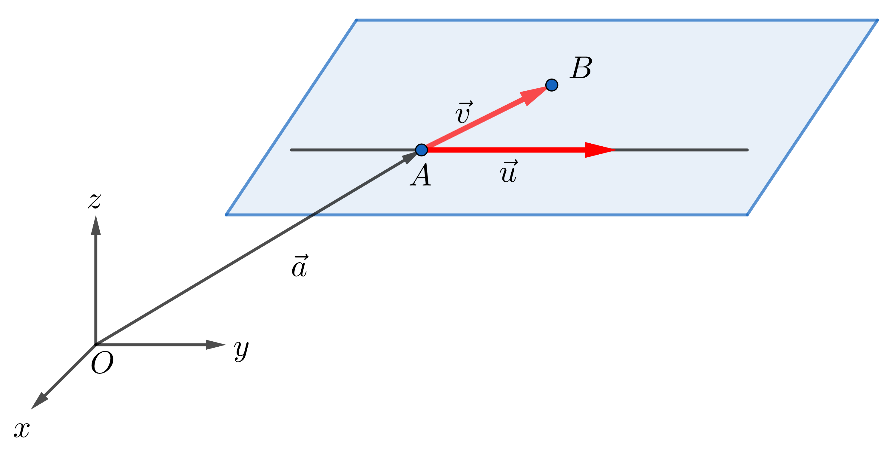

Eindeutige Bestimmung einer Ebene
Eine Ebene im dreidimensionalen Raum ist eindeutig bestimmt, wenn eine der folgenden vier Minimalbedingungen erfüllt ist.
Fall 1: Drei Punkte, die nicht auf einer Geraden liegen¶
Gegeben seien drei Punkte \(A\), \(B\) und \(C\), die nicht kollinear sind. Ein Stützvektor ist beispielsweise
Als Spannvektoren können die Verbindungsvektoren
verwendet werden. Da die Punkte nicht auf einer Geraden liegen, gilt \(\overrightarrow{u}\nparallel \overrightarrow{v}\). Die Ebene ist damit eindeutig festgelegt.

Fall 2: Zwei sich schneidende Geraden¶
Gegeben seien zwei Geraden \(g\) und \(h\), die sich in einem Punkt \(S\) schneiden. Ein Stützvektor ist
Als Spannvektoren dienen die Richtungsvektoren \(\overrightarrow{u}\) von \(g\) und \(\overrightarrow{v}\) von \(h\). Da sich die Geraden schneiden, sind die Richtungsvektoren nicht parallel. Die Ebene wird eindeutig durch den Schnittpunkt und die beiden Richtungsvektoren bestimmt.

Fall 3: Zwei zueinander echt parallele Geraden¶
Gegeben seien zwei Geraden \(g\) und \(h\), die parallel zueinander verlaufen und nicht identisch sind. Ein Stützvektor kann als Ortsvektor eines Punktes \(A\) auf der Geraden \(g\) gewählt werden:
Ein Spannvektor ist der gemeinsame Richtungsvektor der Geraden. Ein zweiter Spannvektor ergibt sich beispielsweise als Verbindungsvektor zwischen einem Punkt \(A\) auf \(g\) und einem Punkt \(B\) auf \(h\):
Da die Geraden nicht identisch sind, sind die Spannvektoren nicht parallel. Die Ebene ist damit eindeutig bestimmt.

Fall 4: Eine Gerade und ein Punkt außerhalb der Geraden¶
Gegeben seien eine Gerade \(g\) und ein Punkt \(B\), der nicht auf dieser Geraden liegt. Ein Stützvektor ist der Ortsvektor eines Punktes \(A\) auf der Geraden:
Ein Spannvektor ist der Richtungsvektor \(\overrightarrow{u}\) der Geraden. Ein zweiter Spannvektor ergibt sich als Verbindungsvektor
Da der Punkt nicht auf der Geraden liegt, sind die Spannvektoren nicht parallel. Die Ebene ist somit eindeutig festgelegt.

Aufgaben: Eindeutige Bestimmung einer Ebene¶
Aufgabe 1: Ebene durch drei Punkte¶
Gegeben sind die Punkte
Bestimmen Sie eine Parameterdarstellung der Ebene, die durch diese drei Punkte festgelegt wird.
Lösung¶
Als Stützvektor wird der Ortsvektor des Punktes \(P\) gewählt:
Zwei Spannvektoren ergeben sich aus den Verbindungsvektoren:
Damit lautet die Parameterform der Ebene:
Aufgabe 2: Ebene durch zwei sich schneidende Geraden¶
Gegeben sind die Geraden
Bestimmen Sie eine Parameterdarstellung der durch \(g_1\) und \(g_2\) festgelegten Ebene.
Lösung¶
Beide Geraden besitzen den gemeinsamen Punkt
Die Richtungsvektoren der Geraden sind nicht parallel und können daher als Spannvektoren verwendet werden:
Damit ergibt sich die Parameterform der Ebene:
Aufgabe 3: Ebene durch eine Gerade und einen Punkt¶
Gegeben sind die Gerade
sowie der Punkt
der nicht auf der Geraden liegt. Bestimmen Sie eine Parameterdarstellung der Ebene.
Lösung¶
Ein Stützvektor der Ebene ist der Ortsvektor eines Punktes der Geraden:
Ein Spannvektor ist der Richtungsvektor der Geraden:
Ein zweiter Spannvektor ergibt sich aus dem Verbindungsvektor zwischen einem Punkt der Geraden und dem gegebenen Punkt:
Damit lautet die Parameterform der Ebene:
Aufgabe 4: Ebene durch zwei parallele Geraden¶
Gegeben sind die parallelen Geraden
Bestimmen Sie eine Parameterdarstellung der durch diese Geraden bestimmten Ebene.
Lösung¶
Als Stützvektor wird ein Punkt der ersten Geraden gewählt:
Ein Spannvektor ist der Richtungsvektor der Geraden:
Da die Geraden parallel sind, ergibt sich ein zweiter Spannvektor aus dem Verbindungsvektor zweier Punkte der Geraden:
Damit lautet die Parameterform der Ebene: